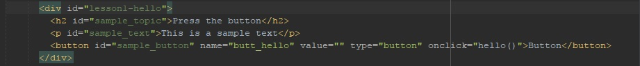
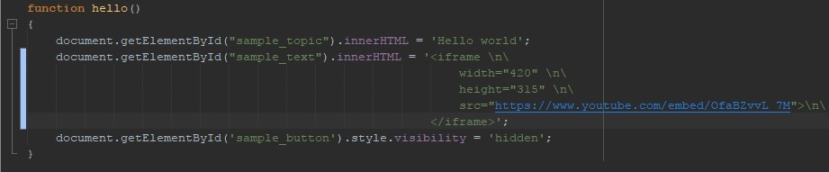

Lesson 1 - baby steps
First step is simple. You need versioning system. It's obvious to use github - free, very advanced think, which can be easily described as "facebook for programmers". So sign up to github and create new project (name it for example LearningJS - very original, there is zilion projects with this name, so our will be hidden). That's it.
Second. We have github project. Now we need something to edit our programs. There is a plenty of choices, I prefer to use netbeans with darcula feel and look extension. Let's download netbeans and in team menu connect to your new account in github. Than we can create new netbeans project. Important! there will be a new directory public_html in which all our files should be.
Third. Now we need playground for playing with JS. This means, we need css template for webpage in which all our sripts will run. Download it, make it simplest as possible, edit it to suit your personal desires and place it to the public_html directory. This will add these files to netbeans too.
And last step for today. Add hello world to the menu and create it new page (hello_world.html). In this page create something like this :
As you can see, we added attribute id to all elements, which we are going to change with our script. We will change topic, text in paragraph and we will hide the button. Our script will be in function called hello, so we add this function to the button in attribute onclick.
Now we can finaly create our function.
And that's it. There is an object called document - it is our web page. We find elements we want to change by getElementById magic (this will be explained later) and we change content of headline and paragraph and style of button to hide it.
And we are done. You can try it for your self here.
What we have learned so far?
- Basic use of github
- Basic use of netbeans
- Basic html editing
- Using a css sheets
- We created our first JS function
Introduction
What this is all about?
It's about me and my son.
It's about learning JavaScript together.